october 2004
Webbrowser
Introduction
The main goal was to have an integrated html-viewer, better suited for searching and organizing interesting web-information and integrating this web-information with the other project information.
Started as a simple viewer for html pages (locally and on the web), this module has become an almost full featured tabbed-webbrowser. The webbrowser is based on existing browsing machines and the intention was (and still is) to let the user choose between a Mozilla-based and an IE-based browser. At this moment unfortunatly, the Mozilla-machine has not implemented enough features to fullfill my needs, so only the IE-based browser is implemented.
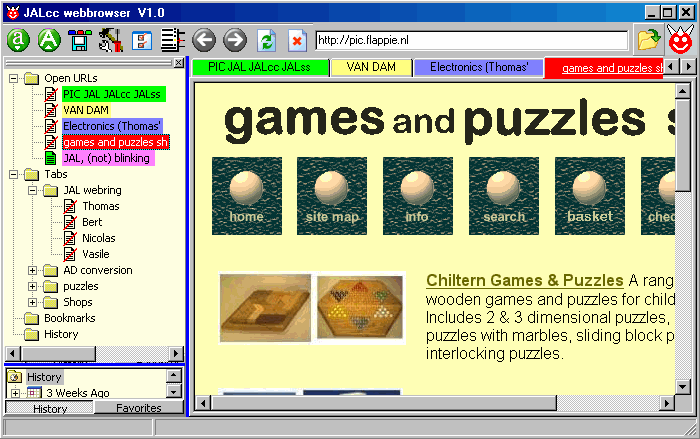
As the sample above shows, it's very easy to order in a hierarchical way the interesting websites. With just one click you can open all websites from the selected branch. Grouping, ordering and saving links to all open webpages, can be done by drag&drop the tabs (assisted by equally colors for related websites), and finally pressing the save-tabs button.
The main parts of the webbrowser are
Browser window
The browser window consists of a number of tabs, with on each tab a webbrowser. Opening a webpage from outside the browser window will open the webpage in a new tab. Tabs opened from within the browser will stay in the same tab, or can be redirected to a new tab through the right mouse menu. In the latter case the color of the new tab will be equal to the color of the tab where the link was launched.
The tabs have it's own rightmouse menu, to close all other or all other colored tabs.
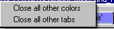
Opening of a website can also be done from the main documentlist in JALcc, dragging a URL or html file into the browser window, by pressing the open-file button, or by inserting the URL into the editbox (followed by Enter).
The right mouse menu is different for links and normal text. Both menus depends also on the browser selected in JALcc and the applications you've installed in that browser. In my case the right mouse menus look like this
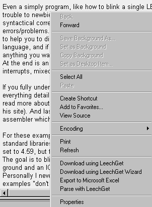 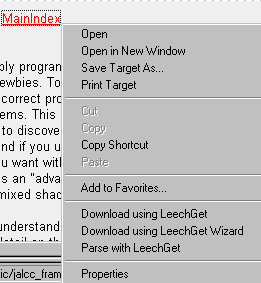
Navigation Buttons
|
|
Decrease or increase the fontsize of all the browsers. This will only work for pages that has relative fonts. |
|
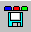 |
Save all open webpages as a new tabset |
|
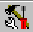 |
Change the settings of the webbrowser |
|
|
Toggle the visibility of the treelist |
|
|
Open all links from the active webpage, with special parsing of google and ixquick search results, see below. |
|
|
Within with 1 browser goto previous or next page. |
|
|
Reload the active webpage |
|
|
Close the active webpage (and remove it from the first branch in the treelist). |
|
|
Starts an opendialog, for opening a html-file. |
|
|
The animation, which will animate during loading of a page. |
Open all links
This function opens all the links in the active page in separate tabs with just 1 click.
All tabs will be given the special color, reserved for this function.
For some search engines, filters have been implemented, to get rid of all AD-ware links.
Open all links, Google filter
Simply filters all with ".google.", which works quiet well.
Open all links, Ixquick filter
The Ixquick filter is quiet complex, and unfortunatly, it sometimes filters a little too much.
Treelist
The treelist contains a list of URLs, organized as tabsets, bookmarks and/or history.
Each element is just a label (without a link), or it's the title of a link and also really contains a link. The icon indicates whether an item is just a label, a local file or an internet file. When clicking on an item, the hint will reveal the URL-link.
Each element in the list has a icon and a textlabel. The icons are determined by the program. When inserting new items (paste, insert, drop), it's important to notice that it makes a difference if inserting on the icon or on the label. Inserting on the icon will insert the new item(s) as children of the selected item, while inserting on the label will insert the item(s) above the selected item.
The labeltext of a html page, will initial be the URL of that page. As a page is opened, the link is added to the first branch, initially still with the URL as text. As soon as the page is loaded, the textlabel in the first branch of the treeview will be replaced by the title of the page. When saving the open webpages to a new branch in the treelist, the label is copied. This is the reason why some pages are listed with their URL and others are listed with their title.
Drag & Drop
not yet working
Treelist Storage
If you want to use the same information on more then 1 computer, you need to transport the treelist storage.
The treelist is stored in the file
<inifilename>_browser_tree.bin
The <inifilename>, is the name of the inifile, without extension. This is either the name op the application or the filename specified in the first commandline parameter.
Right Mouse menu
The Right Mouse click is also set to select the item.
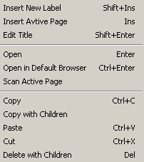
Insert New Label (Ins)
Inserts a new label in the tree, which can serve as an identifier for a tabset. Each label (tabset) can hold a hierarchic tree, of which all items can be opened with just 1 click.
Insert Active Page (Shift+Ins)
Insert a link to the currently active webpage.
Edit Title / URL (Shift+Enter)
Let's you edit the title, and URL.
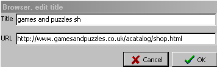
Open (Enter / Double-Click)
Opens the selected item. If the item is already open, it will be activated (brought on top). If the selected item is a label, all it's children will be opened (if not already) and the first child will be activated.
Open in default Browser (Ctrl+Enter)
Opens the selected item in your own default browser.
Scan Active Page (Ctrl+L)
Scans the selected page for embedded links and will open all of them.
Copy with Children (Ctrl+C)
Copies the selected link and all it's children to the clipboard.
Paste (Ctrl+V)
Inserts the item(s) from the clipboard.
Cut (Ctrl+X)
Copies the selected item (and all it's children) to the clipboard and then deletes the item(s).
The user is NOT asked for a confirmation (because he can always get the information back through paste).
Delete with Children (Del)
Deletes the selected item and all it's children. The user is asked for a confirmation.
Browser Settings
For this moment the browser settings only consists of the colors of the tabs. Just click on a colored panel and change the color thorugh the color-dialog.
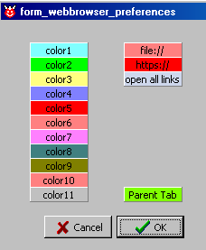
Printing
Printing is done directly through windows and browser, therefor the next images can differ, depending on the windows and browser you've installed.
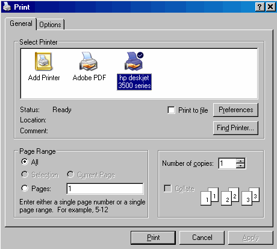
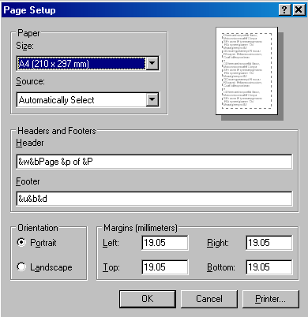
Todo
Viewwindow
treelist
open all links